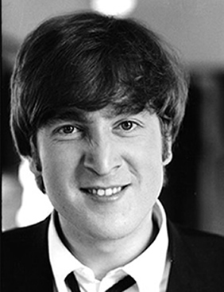

FAST FACTS!
Born: Liverpool, England (October 9, 1940)
He was raised by a single mother named Julia, after whom he had written a song.
Died: New York City, New York (December 8, 1980; aged 40). He was shot in front of his home and in front of his wife, Yoko Ono, by a deranged fan named Mark David Chapman. He passed away after being brought to the hospital. In Central Park, the Strawberry Fields Memorial was created in his memory.
His main position in the Beatles was co-founder, main vocalist, main songwriter,and rhythm guitarist.
His main instruments were the guitar, piano and harmonica.
He married his first wife Cynthia in 1962. Their son Julian was born a year later. Their marriage lasted until 1968 when John fell in love with Yoko Ono. Together, they formed a rock group called the Plastic Ono band. John and Yoko's son, Sean, was born in 1975.
He was a prominent, albeit sometimes controversial, figure of the 60's counterculture and peace movements.
Although some critics claim that the song, Lucy in the Sky with Diamonds, was a reference to drugs, the song was actually inspired by John's son Julian. Julian drew a picture of his nursery school mate, named Lucy O'Donnell, and showed it to his father, calling the drawing Lucy in the Sky with Diamonds.
Some of his solo hits include: "Happy Xmas (War is Over)", "Imagine", "Give Peace a Chance", and "Jealous Guy".